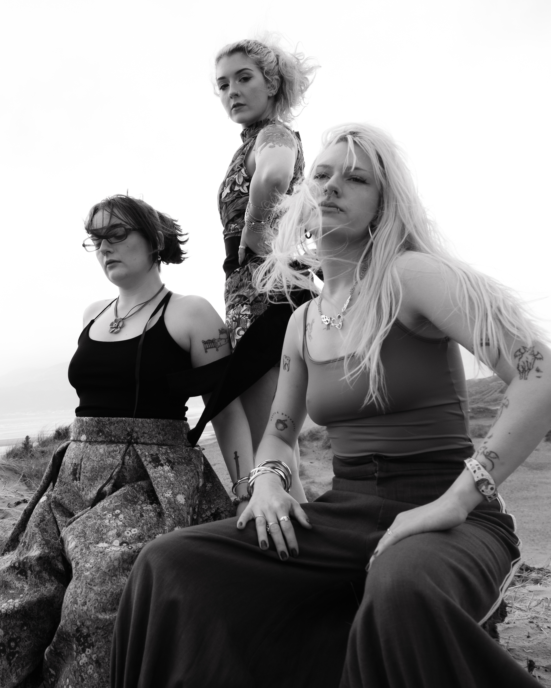
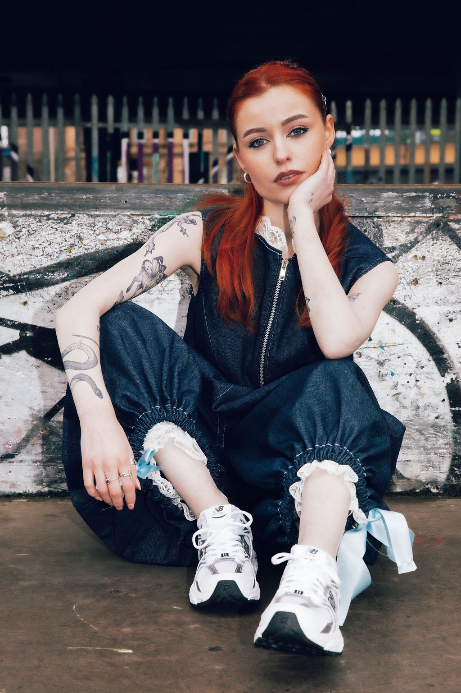
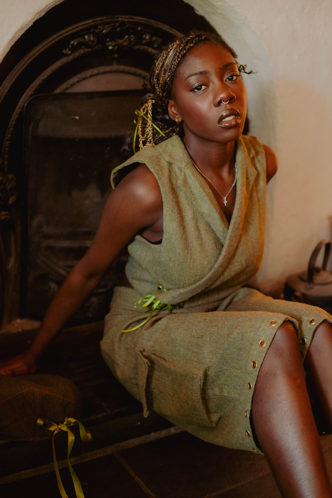
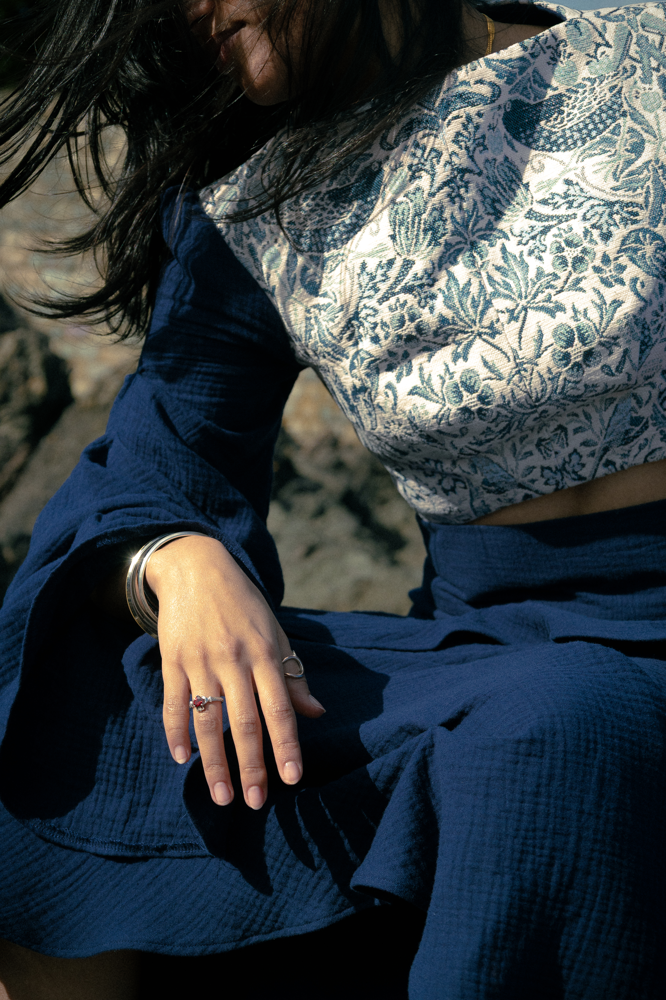
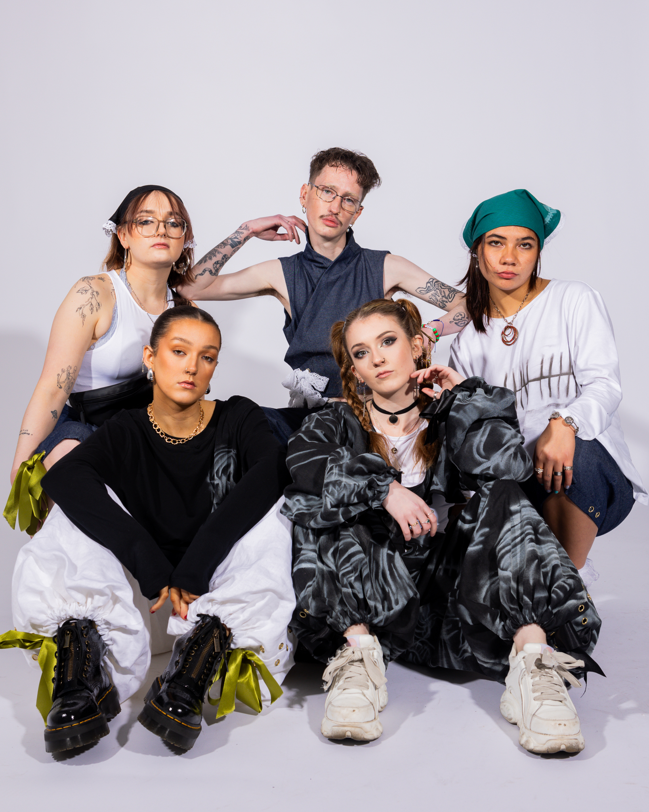

Sperrin Design was founded in 2024 and became a continuation of my final year collection for university. I wondered that if the future repurposing of clothing was considered during the design process for garments, could they become heirloom pieces? Founded from heritage ideals and inspired by previous generations necessity of re-wearing clothes until they were beyond repair. Sunday bests transformed into farm-wear.
About Sperrin Design
Well crafted, sustainable and modular.


Although my brand core comes from my family history and rural background, my pieces are inspired by the streetwear scene I then encountered moving to Belfast. I really struggle to find street style pieces that are not leisurewear and this is where Sperrin Design finds itself. Using simple methods like drawstrings and eyelets, each piece can be styled multiple ways. Detachable sleeves and pockets allow the wearer to decide if they need their piece to be casual or statement and thus become staples designed to be worn and reworn.

With an emphasis on natural or dead-stock fabrics that are sourced locally from small businesses and a made to order structure, I hold fabric sustainability as one of my core brand principles. Any leftover fabric from main collection drops is kept and made into small one-off pieces that are dropped intermittently between seasons.

Tapestry fabric is one of my most recognisable brand identifiers and this is because it is such a hard wearing and durable fabric whilst also being cotton rich. I also love the idea of it being a physical representation of stories woven together.

I want to build a community of people who care about building a wardrobe of statement pieces that they can alter at a whim to suit their individual needs. Join the movement away from “fast fashion” and “micro-trends” and join a more sustainable future, where style is considered, modular and made for you.